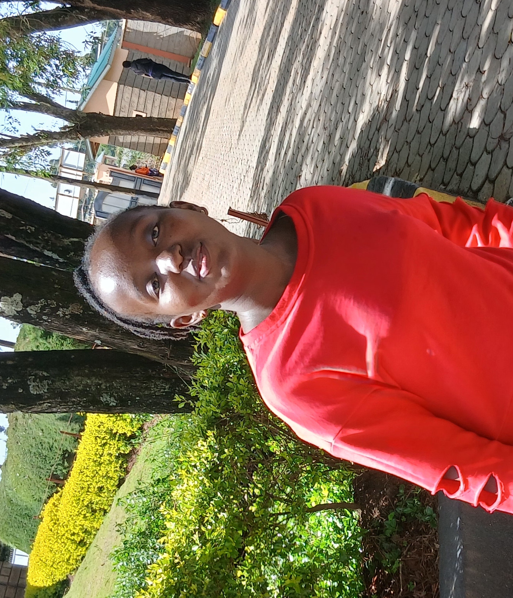

Projects
Project 1

Virtual Gyna App
View on GitHubEliteFemme
Another brief description.
View on GitHubProject 3
Yet another cool project.
View on GitHubWeb Developer | Tech Enthusiast
I am Fridasam, a passionate software developer specializing in Android, web development, and database management. Skilled in Kotlin, MySQL, PostgreSQL, Node.js, and Python, I enjoy building efficient and user-friendly applications. Currently, I am developing a business website with integrated payment functionality refining my expertise in full-stack development and database design. I am always learning, exploring new technologies, and working on projects that create real impact. 😊
In my journey as a tech enthusiast, I earned a Bachelor's degree in Computer Technology from Meru University. Throughout my studies, I gained hands-on experience in software development, database management, and web technologies. My passion for innovation and problem-solving continues to shape my career. Download my CV to learn more about my skills, experience, and projects."
Download My CVI am deeply passionate about software development, with a keen interest in web technologies, mobile app development, and database management. I enjoy exploring modern frameworks, improving user experiences, and staying updated with emerging tech trends. Beyond coding, I am interested in AI integration, cybersecurity, and innovative solutions that make a real impact. Continuous learning and problem-solving drive my passion for technology.
Virtual Gyna App
View on GitHubAnother brief description.
View on GitHubYet another cool project.
View on GitHubFeel free to reach out! Here’s how you can get in touch:
 Email: kfridasam@gmail.com
Email: kfridasam@gmail.com
 WhatsApp: +254748871319
WhatsApp: +254748871319
Connect With Me
Find more of my work and connect with me: